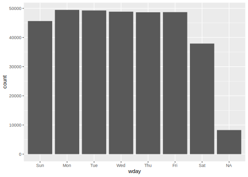

18 Text and Dates
In this chapter we briefly discuss common patterns to handle text and date data and point to useful resources.
18.1 Text
Frequently, data scraped or ingested will contain text that will need to be processed to either extract data, correct errors or resolve duplicate records. In this section we will look at a few common patterns: 1) tools for string operations, 2) tools using regular expressions, and 3) deriving attributes from text. For further reading consult: http://r4ds.had.co.nz/strings.html
18.1.1 String operations
The stringr package contains a number of useful, commonly used string manipulation operations.
library(tidyverse)
library(stringr)
short_string <- "I love Spring"
long_string <- "There's is nothing I love more than 320 in the Spring"Here are a few common ones:
- string length:
str_len
## [1] 13 53- combining strings:
str_c
## [1] "I love Spring. There's is nothing I love more than 320 in the Spring"- subsetting strings:
str_sub
## [1] " lov" "here"- trim strings:
str_trim
## [1] "I am padded"18.1.2 Regular expressions
By far, the most powerful tools for extracting and cleaning text data are regular expressions. The stringr package provides a great number of tools based on regular expression matching.
First, some basics
- Match any character:
. - Match the ‘dot’ character:
\\.
- Anchor start (
^), end ($)
Character classes and alternatives
\d: match any digit\s: match any whitespace (e.g., space, tab, newline)[abc]: match set of characters (e.g,a,b, orc)[^abc]: match anything except this set of characters|: match any of one or more patterns
Match vowels or digits
Repetition
?: zero or one+: one or more*: zero or more
- Grouping and backreferences
Parentheses define groups, which can be referenced using \1, \2, etc.
18.1.3 Tools using regular expressions
- Determine which strings match a pattern:
str_detect: given a vector of strings, returnTRUEfor those that match a regular expression,FALSEotherwise
## [1] "a" "able" "about" "absolute"
## [5] "accept" "account"## # A tibble: 30 x 2
## word result
## <chr> <lgl>
## 1 as TRUE
## 2 bottom FALSE
## 3 letter FALSE
## 4 here FALSE
## 5 thousand FALSE
## 6 love FALSE
## 7 town FALSE
## 8 keep FALSE
## 9 actual TRUE
## 10 front FALSE
## # … with 20 more rowsSimilarly, str_count returns the number of matches in a string instead of just TRUE or FALSE
- Filter string vectors to include only those that match a regular expression
## [1] "The birch canoe slid on the smooth planks."
## [2] "Glue the sheet to the dark blue background."
## [3] "It's easy to tell the depth of a well."
## [4] "These days a chicken leg is a rare dish."
## [5] "Rice is often served in round bowls."
## [6] "The juice of lemons makes fine punch."colors <- c("red", "orange", "yellow", "green", "blue", "purple")
colors_re <- str_c(colors, collapse="|")
print(colors_re)## [1] "red|orange|yellow|green|blue|purple"sentences_with_color <- str_subset(sentences, colors_re) %>% head(10)
str_view_all(sentences_with_color, colors_re)- Extracting matches:
str_extract,str_extract_all
## [1] "blue" "blue" "red" "red" "red"
## [6] "blue" "yellow" "red" "red" "green"- Grouped matches:
str_match
noun_re <- "(a|the) ([^ ]+)"
noun_matches <- sentences %>%
str_subset(noun_re) %>%
str_match(noun_re) %>%
head(10)
noun_matches## [,1] [,2] [,3]
## [1,] "the smooth" "the" "smooth"
## [2,] "the sheet" "the" "sheet"
## [3,] "the depth" "the" "depth"
## [4,] "a chicken" "a" "chicken"
## [5,] "the parked" "the" "parked"
## [6,] "the sun" "the" "sun"
## [7,] "the huge" "the" "huge"
## [8,] "the ball" "the" "ball"
## [9,] "the woman" "the" "woman"
## [10,] "a helps" "a" "helps"The result is a string matrix, with one row for each string in the input vector. The first column includes the complete match to the regular expression (just like str_extract), the remaining columns has the matches for the groups defined in the pattern. To extract the first group matches one would index one of the columns. For example, the matches for the second group are
## [1] "smooth" "sheet" "depth" "chicken"
## [5] "parked" "sun" "huge" "ball"
## [9] "woman" "helps"- Splitting strings:
str_splitsplit strings in a vector based on a match. For instance, to split sentences into words:
## [[1]]
## [1] "The" "birch" "canoe" "slid"
## [5] "on" "the" "smooth" "planks."
##
## [[2]]
## [1] "Glue" "the" "sheet"
## [4] "to" "the" "dark"
## [7] "blue" "background."
##
## [[3]]
## [1] "It's" "easy" "to" "tell" "the"
## [6] "depth" "of" "a" "well."
##
## [[4]]
## [1] "These" "days" "a" "chicken"
## [5] "leg" "is" "a" "rare"
## [9] "dish."
##
## [[5]]
## [1] "Rice" "is" "often" "served" "in"
## [6] "round" "bowls."18.1.4 Extracting attributes from text
Handling free text in data pipelines and or statistical models is tricky. Frequently we extract attributes from text in order to perform analysis.
We draw from https://www.tidytextmining.com/tidytext.html for this discussion.
We usually think of text datasets (called a text corpus) in terms of
documents: the instances of free text in our dataset, and
terms the specific, e.g., words, they contain.
In terms of the representation models we have used so far, we can think of documents as entities, described by attributes based on words, or words as entitites, described by attributes based on documents. To tidy text data, we tend to create one-token-per-row data frames that list the instances of terms in documents in a dataset
Here’s a simple example using Jane Austen text
library(janeaustenr)
library(tidyverse)
original_books <- austen_books() %>%
group_by(book) %>%
mutate(linenumber = row_number(),
chapter = cumsum(str_detect(text, regex("^chapter [\\divxlc]", ignore_case=TRUE)))) %>%
ungroup()
original_books## # A tibble: 73,422 x 4
## text book linenumber chapter
## <chr> <fct> <int> <int>
## 1 "SENSE AND SE… Sense & Sen… 1 0
## 2 "" Sense & Sen… 2 0
## 3 "by Jane Aust… Sense & Sen… 3 0
## 4 "" Sense & Sen… 4 0
## 5 "(1811)" Sense & Sen… 5 0
## 6 "" Sense & Sen… 6 0
## 7 "" Sense & Sen… 7 0
## 8 "" Sense & Sen… 8 0
## 9 "" Sense & Sen… 9 0
## 10 "CHAPTER 1" Sense & Sen… 10 1
## # … with 73,412 more rowsLet’s re-structure it as a one-token-per-row column using the unnest_tokens function in the tidytext package
## # A tibble: 725,055 x 4
## book linenumber chapter word
## <fct> <int> <int> <chr>
## 1 Sense & Sensibil… 1 0 sense
## 2 Sense & Sensibil… 1 0 and
## 3 Sense & Sensibil… 1 0 sensibil…
## 4 Sense & Sensibil… 3 0 by
## 5 Sense & Sensibil… 3 0 jane
## 6 Sense & Sensibil… 3 0 austen
## 7 Sense & Sensibil… 5 0 1811
## 8 Sense & Sensibil… 10 1 chapter
## 9 Sense & Sensibil… 10 1 1
## 10 Sense & Sensibil… 13 1 the
## # … with 725,045 more rowsLet’s remove stop words from the data frame
## # A tibble: 217,609 x 4
## book linenumber chapter word
## <fct> <int> <int> <chr>
## 1 Sense & Sensibil… 1 0 sense
## 2 Sense & Sensibil… 1 0 sensibil…
## 3 Sense & Sensibil… 3 0 jane
## 4 Sense & Sensibil… 3 0 austen
## 5 Sense & Sensibil… 5 0 1811
## 6 Sense & Sensibil… 10 1 chapter
## 7 Sense & Sensibil… 10 1 1
## 8 Sense & Sensibil… 13 1 family
## 9 Sense & Sensibil… 13 1 dashwood
## 10 Sense & Sensibil… 13 1 settled
## # … with 217,599 more rowsNow, we can use this dataset to compute attributes for entities of interest. For instance, let’s create a data frame with words as entities, with an attribute containing the number of times the word appears in this corpus
Which can then use like other data frames as we have used previously. For example to plot most frequent words:
18.2 Handling dates
The lubridate package provides common operations for parsing and operating on dates and times. See http://r4ds.had.co.nz/dates-and-times.html for more information.
A number of functions for parsing dates in a variety of formats are provided, along with functions to extract specific components from parsed date objects
## [1] 2016## [1] 7## [1] 8## [1] 8## [1] 190## [1] 6They can also return month and day of the week names, abbreviated, as ordered factors
## [1] Jul
## 12 Levels: Jan < Feb < Mar < Apr < ... < DecWe can also create attributes of type datetime from string attributes. Here’s an example using the flights dataset
flights_with_dt <- flights %>%
mutate(dep_dt=make_datetime(year, month, day, dep_time %/% 100, dep_time %% 100)) %>%
dplyr::select(year, month, day, dep_time, dep_dt)
flights_with_dt## # A tibble: 336,776 x 5
## year month day dep_time dep_dt
## <int> <int> <int> <int> <dttm>
## 1 2013 1 1 517 2013-01-01 05:17:00
## 2 2013 1 1 533 2013-01-01 05:33:00
## 3 2013 1 1 542 2013-01-01 05:42:00
## 4 2013 1 1 544 2013-01-01 05:44:00
## 5 2013 1 1 554 2013-01-01 05:54:00
## 6 2013 1 1 554 2013-01-01 05:54:00
## 7 2013 1 1 555 2013-01-01 05:55:00
## 8 2013 1 1 557 2013-01-01 05:57:00
## 9 2013 1 1 557 2013-01-01 05:57:00
## 10 2013 1 1 558 2013-01-01 05:58:00
## # … with 336,766 more rowsWith this attribute in place we can extract day of the week and plot the number of flights per day of the week
